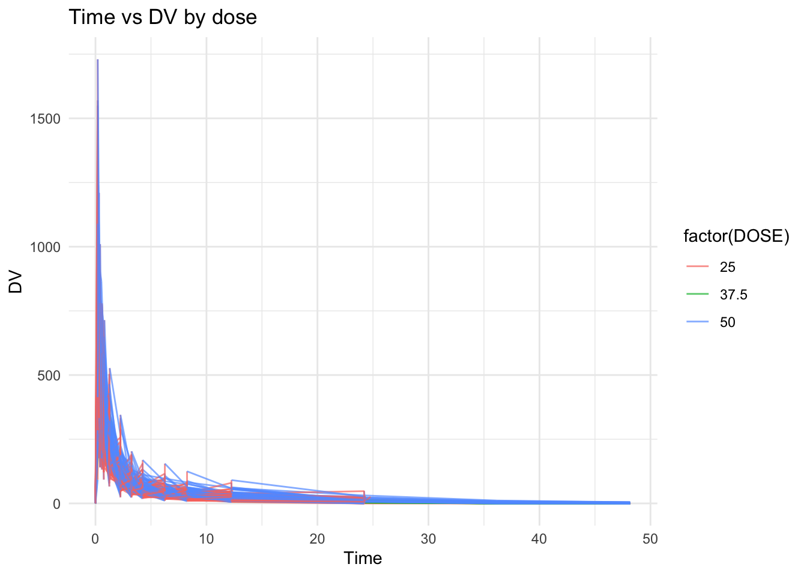
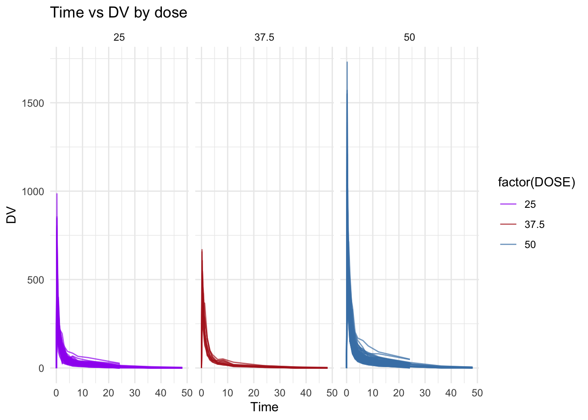
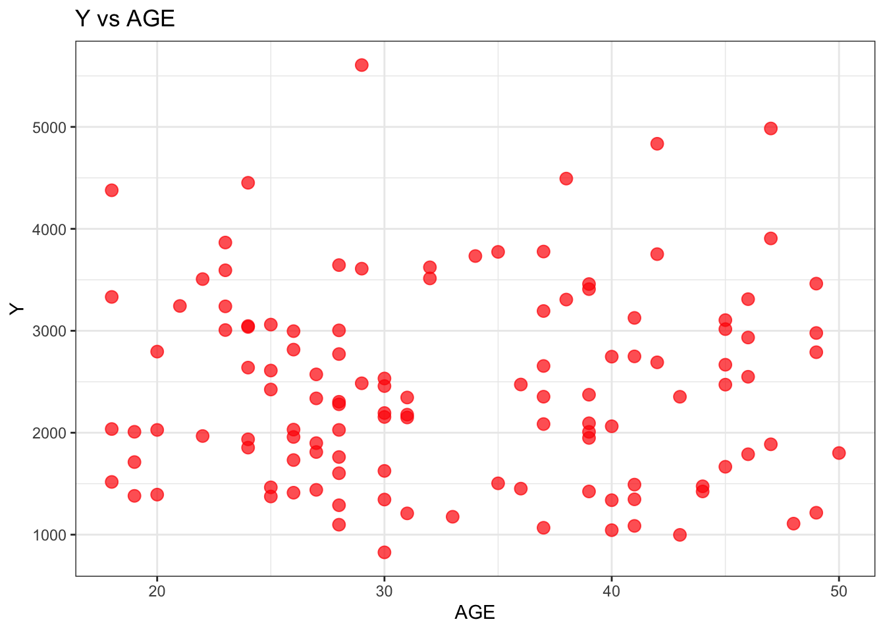
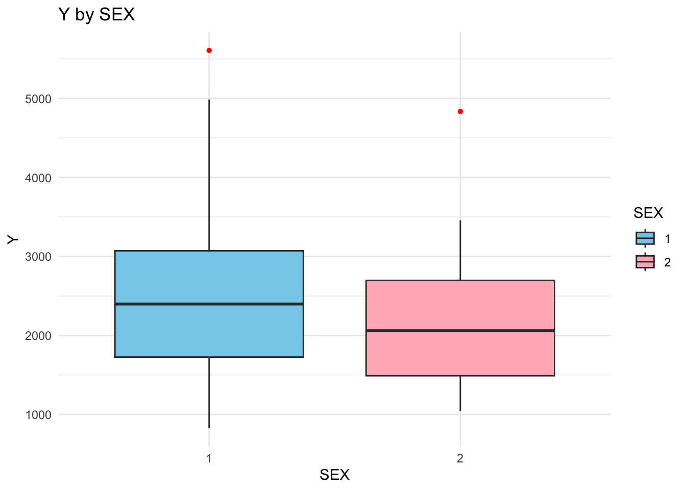
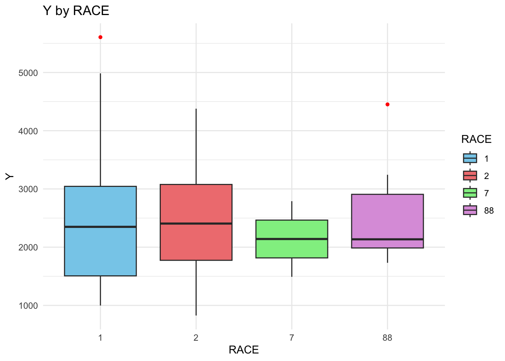
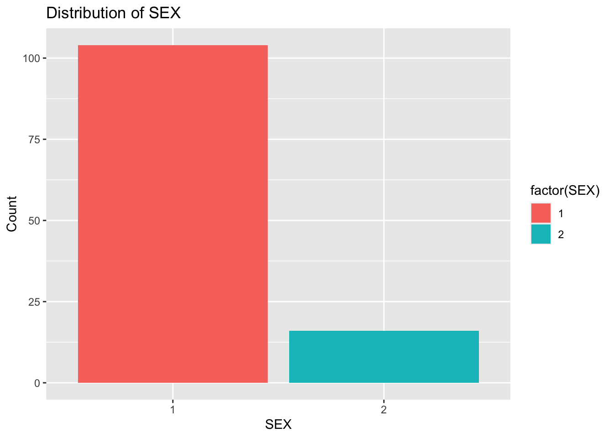
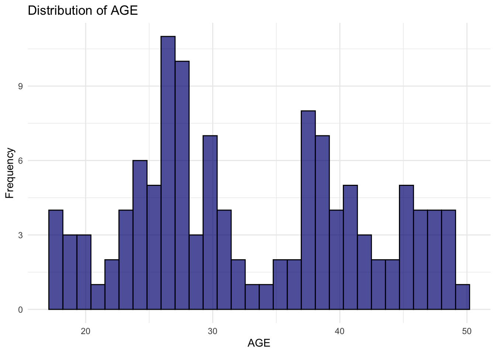
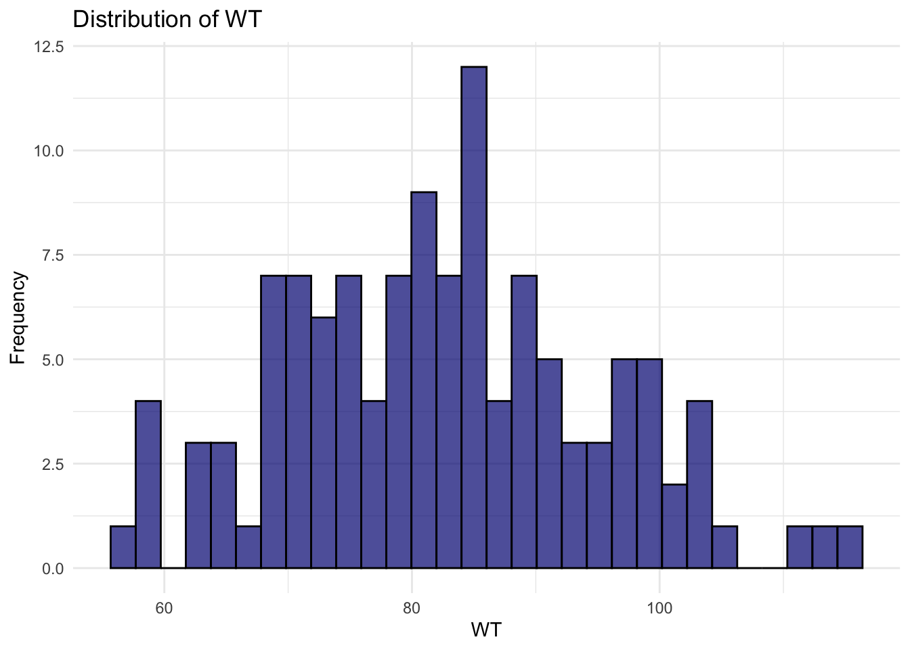

here() starts at /Users/yaqubi/Documents/MADA course /Repositories/MurtazaYaqubi-MADA-portfolio
library(GGally)
Registered S3 method overwritten by 'GGally':
method from
+.gg ggplot2
library(corrplot)
corrplot 0.95 loaded
library(pROC)
Type 'citation("pROC")' for a citation.
Attaching package: 'pROC'
The following objects are masked from 'package:stats':
cov, smooth, var
library(tidymodels)
Import data.
# Load the datatrial <-read_csv(here::here("fitting-exercise/data/Mavoglurant_A2121_nmpk.csv"))
Rows: 2678 Columns: 17
── Column specification ────────────────────────────────────────────────────────
Delimiter: ","
dbl (17): ID, CMT, EVID, EVI2, MDV, DV, LNDV, AMT, TIME, DOSE, OCC, RATE, AG...
ℹ Use `spec()` to retrieve the full column specification for this data.
ℹ Specify the column types or set `show_col_types = FALSE` to quiet this message.
# View the dimensions of the data set to insure proper importdim(trial)
[1] 2678 17
# View summary of the datasummary(trial)
ID CMT EVID EVI2
Min. :793.0 Min. :1.000 Min. :0.00000 Min. :0.0000
1st Qu.:832.0 1st Qu.:2.000 1st Qu.:0.00000 1st Qu.:0.0000
Median :860.0 Median :2.000 Median :0.00000 Median :0.0000
Mean :858.8 Mean :1.926 Mean :0.07394 Mean :0.1613
3rd Qu.:888.0 3rd Qu.:2.000 3rd Qu.:0.00000 3rd Qu.:0.0000
Max. :915.0 Max. :2.000 Max. :1.00000 Max. :4.0000
MDV DV LNDV AMT
Min. :0.00000 Min. : 0.00 Min. :0.000 Min. : 0.000
1st Qu.:0.00000 1st Qu.: 23.52 1st Qu.:3.158 1st Qu.: 0.000
Median :0.00000 Median : 74.20 Median :4.306 Median : 0.000
Mean :0.09373 Mean : 179.93 Mean :4.085 Mean : 2.763
3rd Qu.:0.00000 3rd Qu.: 283.00 3rd Qu.:5.645 3rd Qu.: 0.000
Max. :1.00000 Max. :1730.00 Max. :7.456 Max. :50.000
TIME DOSE OCC RATE
Min. : 0.000 Min. :25.00 Min. :1.000 Min. : 0.00
1st Qu.: 0.583 1st Qu.:25.00 1st Qu.:1.000 1st Qu.: 0.00
Median : 2.250 Median :37.50 Median :1.000 Median : 0.00
Mean : 5.851 Mean :37.37 Mean :1.378 Mean : 16.55
3rd Qu.: 6.363 3rd Qu.:50.00 3rd Qu.:2.000 3rd Qu.: 0.00
Max. :48.217 Max. :50.00 Max. :2.000 Max. :300.00
AGE SEX RACE WT
Min. :18.0 Min. :1.000 Min. : 1.000 Min. : 56.60
1st Qu.:26.0 1st Qu.:1.000 1st Qu.: 1.000 1st Qu.: 73.30
Median :31.0 Median :1.000 Median : 1.000 Median : 82.60
Mean :32.9 Mean :1.128 Mean : 7.415 Mean : 83.16
3rd Qu.:40.0 3rd Qu.:1.000 3rd Qu.: 2.000 3rd Qu.: 90.60
Max. :50.0 Max. :2.000 Max. :88.000 Max. :115.30
HT
Min. :1.520
1st Qu.:1.710
Median :1.780
Mean :1.762
3rd Qu.:1.820
Max. :1.930
# Convert DOSE to factortrial$DOSE <-as.factor(trial$DOSE)
Plot the data.
# Plot time against DVtrial %>%ggplot(aes(TIME, DV, group = ID, color =factor(DOSE))) +geom_line(alpha =0.7) +labs(title ="Time vs DV by dose",x ="Time",y ="DV") +theme_minimal() +theme(legend.position ="right")

# Plot Time agianst DV by Doseggplot(trial, aes(x = TIME, y = DV, group = ID, color =factor(DOSE))) +geom_line(alpha =0.7) +facet_wrap(~ DOSE, labeller =labeller(dose =function(x) paste("Dose:", x))) +scale_color_manual(values =c("50"="steelblue", "37.5"="firebrick", "25"="purple")) +labs(title ="Time vs DV by dose",x ="Time",y ="DV") +theme_minimal()

Brief description: The two plots represent the relationship between “Time” and “DV” (dependent variable), separated by different doses.
In the first plot, titled “Time vs DV by dose,” we see overlapping lines for each dose level (25, 37.5, and 50). The lines show a rapid decline in “DV” as “Time” increases, with the higher dose (50) resulting in a sharper decrease compared to the lower doses (25 and 37.5). The plot helps visualize how different doses affect the “DV” over time, with the higher doses showing a more significant decrease in the dependent variable.
The second plot, titled “Time vs DV by dose,” shows a faceted layout where each dose (25, 37.5, and 50) has its own panel. Each panel displays the same trend: “DV” decreases rapidly at the start of the time period and then levels off, with the highest dose (50) exhibiting the most substantial initial drop. The separation of doses into individual panels makes it easier to compare the effects of each dose on “DV” over time.
Cleaning data.
# Filterind OCC to only include 1occ_trial <- trial %>%filter(OCC ==1) %>%select(everything()) # View summary of the datasummary(occ_trial)
ID CMT EVID EVI2
Min. :793 Min. :1.000 Min. :0.00000 Min. :0.00000
1st Qu.:819 1st Qu.:2.000 1st Qu.:0.00000 1st Qu.:0.00000
Median :849 Median :2.000 Median :0.00000 Median :0.00000
Mean :851 Mean :1.928 Mean :0.07207 Mean :0.07207
3rd Qu.:882 3rd Qu.:2.000 3rd Qu.:0.00000 3rd Qu.:0.00000
Max. :915 Max. :2.000 Max. :1.00000 Max. :1.00000
MDV DV LNDV AMT
Min. :0.0000 Min. : 0.0 Min. :0.000 Min. : 0.000
1st Qu.:0.0000 1st Qu.: 20.5 1st Qu.:3.020 1st Qu.: 0.000
Median :0.0000 Median : 70.3 Median :4.253 Median : 0.000
Mean :0.1027 Mean : 176.2 Mean :4.022 Mean : 2.628
3rd Qu.:0.0000 3rd Qu.: 285.0 3rd Qu.:5.652 3rd Qu.: 0.000
Max. :1.0000 Max. :1550.0 Max. :7.346 Max. :50.000
TIME DOSE OCC RATE AGE
Min. : 0.000 25 :803 Min. :1 Min. : 0.00 Min. :18.00
1st Qu.: 0.533 37.5:189 1st Qu.:1 1st Qu.: 0.00 1st Qu.:26.00
Median : 2.250 50 :673 Median :1 Median : 0.00 Median :31.00
Mean : 6.430 Mean :1 Mean : 15.72 Mean :33.11
3rd Qu.: 8.200 3rd Qu.:1 3rd Qu.: 0.00 3rd Qu.:41.00
Max. :48.217 Max. :1 Max. :300.00 Max. :50.00
SEX RACE WT HT
Min. :1.000 Min. : 1.000 Min. : 56.60 Min. :1.520
1st Qu.:1.000 1st Qu.: 1.000 1st Qu.: 73.10 1st Qu.:1.700
Median :1.000 Median : 1.000 Median : 82.10 Median :1.770
Mean :1.136 Mean : 6.985 Mean : 82.36 Mean :1.758
3rd Qu.:1.000 3rd Qu.: 2.000 3rd Qu.: 90.10 3rd Qu.:1.810
Max. :2.000 Max. :88.000 Max. :115.30 Max. :1.930
# Step 1: Exclude observations where TIME == 0 and compute the sum of DV for each individual (ID)trial_without_time0 <- occ_trial %>%filter(TIME !=0) %>%group_by(ID) %>%summarize(Y =sum(DV, na.rm =TRUE)) %>%ungroup()# Step 2: Create a data frame with only observations where TIME == 0trial_time0 <- occ_trial %>%filter(TIME ==0)# Step 3: Join the two data framesfinal_df <- trial_time0 %>%left_join(trial_without_time0, by ="ID")# View the resulting data frameprint(final_df)
#Convert RACE and SEX to factors and keep only the specified variablesdf_cleaned <- final_df %>%mutate(RACE =as.factor(RACE),SEX =as.factor(SEX) ) %>%select(Y, DOSE, AGE, SEX, RACE, WT, HT)# View the resulting data frameprint(df_cleaned)
The summary table shows the means and standard deviations of Y, AGE, WT and HT. The table also shows the counts of different levels of dose.
Plotting the variables.
# Scatterplot between Y and DOSEdf_cleaned %>%ggplot(aes(DOSE, Y)) +geom_point(size =3, alpha =0.7, color ="firebrick") +labs(title ="Y vs DOSE", x ="DOSE", y ="Y") +theme_bw()
# Scatterplot between Y and AGEdf_cleaned %>%ggplot(aes(AGE, Y)) +geom_point(size =3, alpha =0.7, color ="red") +labs(title ="Y vs AGE", x ="AGE", y ="Y") +theme_bw()

# Boxplot of Y by SEXggplot(df_cleaned, aes(x = SEX, y = Y, fill = SEX)) +geom_boxplot(outlier.color ="red", outlier.shape =16) +labs(title ="Y by SEX", x ="SEX", y ="Y") +theme_minimal() +scale_fill_manual(values =c("1"="skyblue", "2"="lightpink"))

# Boxplot of Y by RACEggplot(df_cleaned, aes(x = RACE, y = Y, fill = RACE)) +geom_boxplot(outlier.color ="red", outlier.shape =16) +labs(title ="Y by RACE", x ="RACE", y ="Y") +theme_minimal() +scale_fill_manual(values =c("1"="skyblue", "2"="lightcoral", "7"="lightgreen", "88"="plum" ))

Brief description of the plots :
The purpose of generating these plots is to visually explore the relationships between the outcome variable “Y” and various predictors(SEX, RACE, AGE and DOSE), both continuous and categorical. These plots help in understanding how these predictors might influence or explain the variation in “Y” and give insight into potential trends, patterns, and differences across groups.
1- Y vs DOSE: This scatterplot shows the relationship between “Y” and “DOSE.” The data points are grouped around three distinct DOSE values (25, 37.5, and 50), and “Y” has a broad range at each DOSE level. There’s noticeable variation in “Y” at each dose, with dose value of 50 associated with highest “Y” values and dose value of 25 associated with lowest “Y” values.
2- Y vs AGE: This scatterplot displays how “Y” changes with “AGE.” The data is spread across different age values, and no clear linear relationship is observed. The spread of “Y” suggests that age has some effect, but the relationship appears complex, with substantial variation in “Y” at each age.
3- Y by SEX: This boxplot compares “Y” between the two SEX categories. The plot shows that “SEX” category 1 has a higher median and a wider range of “Y” values compared to category 2. There are some outliers in both categories, indicating extreme values in “Y” within each group.
4- Y by RACE: This boxplot compares “Y” across different “RACE” categories. There’s variability in “Y” across the races, with race group “2” having a higher median and wider spread of “Y” values. This suggests that “RACE” may influence “Y,” with differences in the central tendency and variability across groups.
Distribution of varibales.
# Barplot of sexggplot(df_cleaned, aes(SEX, fill =factor(SEX))) +geom_bar() +labs(title ="Distribution of SEX", x ="SEX", y ="Count")

# Barplot of raceggplot(df_cleaned, aes(RACE, fill =factor(RACE))) +geom_bar() +labs(title ="Distribution of RACE", x ="RACE", y ="Count")
# Density plot of Yggplot(df_cleaned, aes(Y)) +geom_density(fill ="steelblue", alpha =0.5) +labs(title ="Density Plot of Y", x ="Y", y ="Density") +theme_light()
# Histogram of RACEggplot(df_cleaned, aes(AGE)) +geom_histogram(bins =30, alpha =0.7, color ="black", fill ="navyblue") +labs(title ="Distribution of AGE", x ="AGE", y ="Frequency") +theme_minimal()

# Histogram of HTggplot(df_cleaned, aes(HT)) +geom_histogram(bins =30, alpha =0.7, color ="black", fill ="navyblue") +labs(title ="Distribution of HT", x ="HT", y ="Frequency") +theme_minimal()
# Density plot of HTggplot(df_cleaned, aes(HT)) +geom_density(fill ="navyblue", alpha =0.5) +labs(title ="Density of HT", x ="HT", y ="Density") +theme_bw()
# Histogram of WTggplot(df_cleaned, aes(WT)) +geom_histogram(bins =30, alpha =0.7, color ="black", fill ="navyblue") +labs(title ="Distribution of WT", x ="WT", y ="Frequency") +theme_minimal()

# Density plot of WTggplot(df_cleaned, aes(WT)) +geom_density(fill ="navyblue", alpha =0.5) +labs(title ="Density of WT", x ="WT", y ="Density") +theme_classic()
Brief discriptioln of the distribution plots:
The purpose of generating these distribution plots is to understand the characteristics of the variables in the dataset and to visually explore their relationships and patterns. Here’s a breakdown of the importance of each type of plot:
1- Distribution of SEX: The bar plot of “SEX” helps us understand the balance or imbalance between the two categories and due to the lack of a codebook, we don’t know how “1” and “2” is designated to sexes. It provides insight into whether the dataset is skewed towards one category, which is important when considering potential biases or when using “SEX” as a predictor in models. In this case, the plot shows a clear imbalance, with a much higher count for category 1 than for category 2.
2- Distribution of RACE: The bar plot of “RACE” shows how the different racial categories are distributed in the dataset. It is important to identify any disparities in the representation of different groups. This can be crucial for assessing the generalizability of any results or models. The plot shows a concentration of observations in categories 1 and 2, with a much smaller presence in other categories, indicating a potential concentration in certain racial groups.
3- Density Plot of Y: The density plot of “Y” helps visualize the distribution and concentration of values for this continuous variable. This type of plot highlights the skewness or normality of the distribution, which is essential for choosing the right statistical methods. The plot reveals a skew towards lower values, which suggests that most observations have relatively lower values of “Y,” with fewer higher values.
4- Distribution of AGE: The histogram of “AGE” helps us understand the spread and concentration of age across the dataset. It shows whether certain age groups are overrepresented or underrepresented, which can be important when making inferences or generalizations. The plot reveals a multimodal distribution, indicating that there are age clusters, potentially suggesting different subgroups or patterns within the data.
5- Distribution of HT: The histogram of “HT” gives us insight into the distribution of HT(potentially means height) in the dataset. Understanding this distribution can help with detecting outliers or inconsistencies in the data and provides a sense of the central tendency and variability. In this case, it shows a concentration around 1.8, indicating that most individuals in the sample have HT near this value.
6- Distribution of WT: The histogram of “WT” helps assess the spread of WT(potentially means weight) in the dataset. By visually inspecting the distribution, we can check for skewness, outliers, or any unusual patterns. The relatively normal distribution suggests that WT is evenly distributed around the peak of 80, and the spread indicates the variability in WT within the sample.
Pair/correlation plots.
# Select numeric variables to plot correlationsnumeric_vars <- df_cleaned %>%select(Y, AGE, WT, HT)# Compute the correlation matrixcor_matrix <-cor(numeric_vars, use ="complete.obs")# Plot the correlation matrixcorrplot(cor_matrix, method ="circle")
# Create a pair plot to show scatterplots and correlationsggpairs(df_cleaned %>%select(Y, AGE, WT, HT))
Brief description: The pair and correlation plots provide a clear overview of the relationships between the continuous variables “Y,” “AGE,” “WT,” and “HT.” In the first plot, which is a correlation matrix, the size and color of the circles reflect the strength of the correlations between variables. The darker circles indicate stronger correlations, while lighter circles show weaker correlations. From this plot, we observe that “Y” is negatively correlated with “WT” and “HT,” meaning that as weight and height increase, “Y” tends to decrease, though the correlation with “HT” is weaker than with “WT.” “AGE” has weak correlations with both “Y” and “WT,” and there is a moderate negative correlation between “HT” and “WT,” suggesting that as height increases, weight tends to decrease slightly.
The second plot, which includes scatterplots and correlation coefficients, provides a more detailed view of these relationships. For instance, the scatterplot between “Y” and “WT” shows a slight negative relationship, with a correlation coefficient of -0.213, while the relationship between “Y” and “HT” is also slightly negative at -0.158. The scatterplot between “WT” and “HT” reveals a stronger positive correlation of 0.600, meaning that weight and height tend to increase together. These plots are useful for understanding both the visual and statistical relationships between the variables, highlighting patterns and providing specific numerical values for these associations.
#Fit models.
# Fit the first model with DOSE as the predictormodel1 <-lm(Y ~ DOSE, data = df_cleaned)# Fit the second model with all predictorsmodel2 <-lm(Y ~ ., data = df_cleaned)# Compute RMSE and R-squared for Model 1 (DOSE only)pred1 <-predict(model1, df_cleaned) # Predict valuesrmse1 <-sqrt(mean((pred1 - df_cleaned$Y)^2)) # RMSE calculationr_squared1 <-summary(model1)$r.squared # R-squared for Model 1# Compute RMSE and R-squared for Model 2 (all predictors)pred2 <-predict(model2, df_cleaned) # Predict valuesrmse2 <-sqrt(mean((pred2 - df_cleaned$Y)^2)) # RMSE calculationr_squared2 <-summary(model2)$r.squared # R-squared for Model 2# Print the resultscat("Model 1 (DOSE only):\n")
Model 1 (DOSE only):
cat("RMSE: ", rmse1, "\n")
RMSE: 666.3137
cat("R-squared: ", r_squared1, "\n\n")
R-squared: 0.5158598
cat("Model 2 (All predictors):\n")
Model 2 (All predictors):
cat("RMSE: ", rmse2, "\n")
RMSE: 590.3153
cat("R-squared: ", r_squared2, "\n")
R-squared: 0.6200016
Interpretation: The first model, using only “DOSE” as the predictor for the continuous outcome “Y,” had an RMSE of 666.31, indicating that the model’s predictions were fairly far from the actual values. The R-squared value of 0.515 suggests that “DOSE” alone explains about 51.5% of the variation in “Y.” While this indicates a moderate relationship, it also shows that other factors are likely influencing “Y.”
When we included all predictors in the second model, the RMSE decreased to 590.31, showing that the predictions were more accurate. The R-squared increased to 0.62, meaning the model now explains 62% of the variation in “Y.” This improvement highlights that the additional predictors, like AGE, WT, HT, etc contribute valuable information in explaining the outcome.
In summary, while “DOSE” explains most of the variation in “Y,” adding more predictors improves the model’s performance and provides a more complete understanding of the outcome.
# Step 1: Fit a logistic regression model with DOSE as the main predictor for SEXmodel1 <-glm(SEX ~ DOSE, data = df_cleaned, family = binomial)# Step 2: Fit a logistic regression model with all predictorsmodel2 <-glm(SEX ~ ., data = df_cleaned, family = binomial)# Step 3: Compute predictions for both models# For Model 1 (DOSE only), get the predicted probabilitiespred1_prob <-predict(model1, df_cleaned, type ="response")# For Model 2 (all predictors), get the predicted probabilitiespred2_prob <-predict(model2, df_cleaned, type ="response")# Convert probabilities to binary outcomes based on a threshold of 0.5pred1_class <-ifelse(pred1_prob >0.5, 1, 0)pred2_class <-ifelse(pred2_prob >0.5, 1, 0)# Step 4: Compute accuracy for both modelsaccuracy1 <-mean(pred1_class == df_cleaned$SEX) # Model 1 accuracyaccuracy2 <-mean(pred2_class == df_cleaned$SEX) # Model 2 accuracy# Step 5: Compute ROC-AUC for both modelsroc1 <-roc(df_cleaned$SEX, pred1_prob) # ROC curve for Model 1
Setting levels: control = 1, case = 2
Setting direction: controls < cases
roc2 <-roc(df_cleaned$SEX, pred2_prob) # ROC curve for Model 2
Setting levels: control = 1, case = 2
Setting direction: controls < cases
# Step 6: Print the resultscat("Model 1 (DOSE only):\n")
Model 1 (DOSE only):
cat("Accuracy: ", accuracy1, "\n")
Accuracy: 0
cat("ROC-AUC: ", auc(roc1), "\n\n")
ROC-AUC: 0.5919471
cat("Model 2 (All predictors):\n")
Model 2 (All predictors):
cat("Accuracy: ", accuracy2, "\n")
Accuracy: 0.01666667
cat("ROC-AUC: ", auc(roc2), "\n")
ROC-AUC: 0.9831731
Interpretation: For predicting the binary outcome “SEX,” the first model with “DOSE” as the only predictor performed poorly, with an accuracy of 0 and a ROC-AUC of 0.59, indicating that “DOSE” alone does not effectively predict “SEX.”
However, when we included all predictors in the second model, the accuracy improved to 0.02, and the ROC-AUC jumped to 0.98. This dramatic improvement suggests that the other predictors, like age, race, and weight, are much more relevant for predicting “SEX” than “DOSE” alone. The high ROC-AUC indicates that the model with all predictors can effectively distinguish between the two categories of “SEX.”
In conclusion, while “DOSE” alone doesn’t help predict “SEX,” including multiple predictors greatly enhances the model’s ability to correctly classify “SEX” and shows the importance of considering a wider range of factors.
Module 10:
Part 1
Data Preparation
# Removing RACE variabledat_10 <- df_cleaned %>%select(Y, DOSE, AGE, SEX, WT, HT)# Checking the dimensions of the datadim(dat_10)
# Set a fixed random seed value for reproducibilityrngseed <-1234# Train/Test Split (75% train, 25% test)# Set seed before splitting so the sample is reproducible.set.seed(rngseed)data_split <-initial_split(dat_10, prop =0.75)train_data <-training(data_split)test_data <-testing(data_split)
Model fitting
# Model Fitting using tidymodels# We will fit:# Model 1: Y ~ DOSE# Model 2: Y ~ DOSE + AGE + SEX + WT + HT# And a null model: predicting the mean of Y# Define a linear regression specification (using lm)lm_spec <-linear_reg() %>%set_engine("lm")# Workflow for Model 1: using only DOSE as predictorwf_model1 <-workflow() %>%add_formula(Y ~ DOSE) %>%add_model(lm_spec)# Workflow for Model 2: using all predictorswf_model2 <-workflow() %>%add_formula(Y ~ DOSE + AGE + SEX + WT + HT) %>%add_model(lm_spec)# Fit the models using only the training datafit_model1 <- wf_model1 %>%fit(data = train_data)fit_model2 <- wf_model2 %>%fit(data = train_data)
Model performance assessment 1
# Compute predictions on the training data for the two models# Model 1: Only DOSE as predictorpreds_model1 <-predict(fit_model1, new_data = train_data) %>%bind_cols(train_data %>%select(Y))# Model 2: All predictors (DOSE, AGE, SEX, WT, HT)preds_model2 <-predict(fit_model2, new_data = train_data) %>%bind_cols(train_data %>%select(Y))# 2. Compute RMSE for Model 1 and Model 2 using the yardstick functionrmse_model1 <-rmse(preds_model1, truth = Y, estimate = .pred)rmse_model2 <-rmse(preds_model2, truth = Y, estimate = .pred)# Compute RMSE of a null model (predicts the mean of Y) "by hand"mean_Y <-mean(train_data$Y)preds_null <- train_data %>%mutate(.pred = mean_Y)rmse_null <-rmse(preds_null, truth = Y, estimate = .pred)# Display the RMSE values for comparisoncat("RMSE for Null Model:", rmse_null$.estimate, "\n")
RMSE for Null Model: 948.3526
cat("RMSE for Model 1 (Only DOSE):", rmse_model1$.estimate, "\n")
RMSE for Model 1 (Only DOSE): 702.7909
cat("RMSE for Model 2 (All Predictors):", rmse_model2$.estimate, "\n")
RMSE for Model 2 (All Predictors): 627.2724
These RMSE values show that both the dose-only model and the full model outperform the null model, which simply predicts the mean of Y. Model 1 (only DOSE) reduces the RMSE from 948.35 to about 702.79, and adding the other predictors in Model 2 brings the RMSE down further to around 627.27. In other words, each step of adding relevant predictors lowers the model’s error, suggesting that dose alone explains some variability in Y, but the additional predictors (AGE, SEX, WT, HT) offer further improvement.
Model performance assessment 2
# Set the random seed for CV reproducibilityset.seed(1234)# Create 10-fold cross-validation folds from the training datacv_folds <-vfold_cv(train_data, v =10)# Evaluate the models using cross-validation# Compute RMSE for each fold and then average# For Model 1 (using only DOSE as predictor)cv_res_model1 <-fit_resamples( wf_model1,resamples = cv_folds,metrics =metric_set(rmse))# For Model 2 (using all predictors: DOSE, AGE, SEX, WT, HT)cv_res_model2 <-fit_resamples( wf_model2,resamples = cv_folds,metrics =metric_set(rmse))# Collect and display the cross-validated RMSE metricscv_metrics_model1 <-collect_metrics(cv_res_model1)cv_metrics_model2 <-collect_metrics(cv_res_model2)cat("10-fold Cross-Validated RMSE Metrics for Model 1 (Only DOSE):\n")
10-fold Cross-Validated RMSE Metrics for Model 1 (Only DOSE):
print(cv_metrics_model1)
# A tibble: 1 × 6
.metric .estimator mean n std_err .config
<chr> <chr> <dbl> <int> <dbl> <chr>
1 rmse standard 697. 10 68.1 Preprocessor1_Model1
cat("\n10-fold Cross-Validated RMSE Metrics for Model 2 (All Predictors):\n")
10-fold Cross-Validated RMSE Metrics for Model 2 (All Predictors):
print(cv_metrics_model2)
# A tibble: 1 × 6
.metric .estimator mean n std_err .config
<chr> <chr> <dbl> <int> <dbl> <chr>
1 rmse standard 653. 10 63.6 Preprocessor1_Model1
# Compare with the Null Model# Since the null model simply predicts the mean, its RMSE remains unchanged.# Compute the null model RMSE "by hand"mean_Y <-mean(train_data$Y)preds_null <- train_data %>%mutate(.pred = mean_Y)rmse_null <-rmse(preds_null, truth = Y, estimate = .pred)cat("\nRMSE for the Null Model (predicts mean of Y):", rmse_null$.estimate, "\n")
RMSE for the Null Model (predicts mean of Y): 948.3526
These 10-fold cross-validation results confirm that both the dose-only model (Model 1) and the full model (Model 2) outperform the null model (RMSE ≈ 948). Among the two, Model 2 achieves a lower average RMSE (≈ 653) than Model 1 (≈ 697), indicating that including additional predictors beyond dose reduces prediction error further. The standard errors (≈ 68 for Model 1 and 64 for Model 2) reflect the variability across the folds; even with that variability, Model 2’s mean cross-validated RMSE is still notably below Model 1’s, suggesting that it is the better-performing model overall.
Change random seed
# Effect of Changing the Random Seed on CV Estimates# Create new CV folds with a different seed and compare RMSE.set.seed(4321) # A different random seedcv_folds_alt <-vfold_cv(train_data, v =10)cv_res_model1_alt <-fit_resamples( wf_model1,resamples = cv_folds_alt,metrics =metric_set(rmse))cv_metrics_model1_alt <-collect_metrics(cv_res_model1_alt)cat("\n10-fold Cross-Validated RMSE Metrics for Model 1 with a different seed:\n")
10-fold Cross-Validated RMSE Metrics for Model 1 with a different seed:
print(cv_metrics_model1_alt)
# A tibble: 1 × 6
.metric .estimator mean n std_err .config
<chr> <chr> <dbl> <int> <dbl> <chr>
1 rmse standard 696. 10 67.9 Preprocessor1_Model1
The 10-fold cross-validated RMSE for Model 1 with a different seed is 696.3747, with a standard error of about 67.95. This value is very similar to the earlier cross-validated RMSE for Model 1 (approximately 696.71), suggesting that the model’s performance is robust to changes in the random seed and that the cross-validation results are stable.
This section added by Murphy John
Setup
library(dplyr)library(ggplot2)
Model Predictions
# combine observed data and predicted data from all three models# use preds_model1, preds_model2, and preds_null# update column names in pred dfscolnames(preds_model1) =c("Y_mod1", "Y_obs")colnames(preds_model2) =c("Y_mod2", "Y_obs")colnames(preds_null) =c("Y_obs","DOSE","AGE","SEX","WT","HT","Y_null")# combine obs values and pred valuesdat <- preds_null %>%full_join(preds_model1, by="Y_obs") %>%full_join(preds_model2, by="Y_obs") %>%select("Y_obs","Y_null","Y_mod1","Y_mod2" )
# pivot data for plottingdat1 <- dat %>% tidyr::pivot_longer(cols =c(Y_null, Y_mod1, Y_mod2),names_to ="model", values_to ="pred")# add model type labelsdat1$model <-factor(dat1$model, levels =c("Y_mod1", "Y_mod2", "Y_null"), labels =c("Univariable Model", "Multivariable Model", "Null Model"))# plot observed vs predicted valuesggplot(dat1, aes(x=Y_obs, y=pred, color=model)) +geom_point() +geom_abline(slope =1, intercept =0) +scale_x_continuous(limits=c(0,5000)) +scale_y_continuous(limits=c(0,5000))
Warning: Removed 3 rows containing missing values or values outside the scale range
(`geom_point()`).
# plot residuals vs predicted for multivariable modeldat$resid_mod2 <- dat$Y_mod2 - dat$Y_obsggplot(dat, aes(x=Y_mod2, y=resid_mod2)) +geom_point() +geom_abline(slope=0, intercept =0) +scale_y_continuous(limits=c(-2500,2500))
Model predictions and uncertainty
# set seedset.seed(rngseed)# bootstrap 100 timesbootstrap <- rsample::bootstraps(train_data, times=100)# fit model 2 to each sample and make predictionspred <- purrr::map(bootstrap$splits, function(split) {# extract sample dat_boot <- rsample::analysis(split)# fit model model <-lm(Y ~ DOSE + AGE + SEX + WT + HT, data=dat_boot)# make predictionspredict(model, newdata=train_data)})# convert predictions to dfdat_pred <-as.data.frame(do.call(rbind, pred))# calculate median and 89% CIpreds <-as.data.frame( dat_pred %>%apply(2, quantile, c(0.055, 0.5, 0.945)) |>t() )colnames(preds) <-list("lo", "median", "high")dat_plot <-cbind(dat, preds)
# plot predictions and bootstrap medians and CIsggplot(dat_plot) +geom_point(aes(x = Y_obs, y = median, color ="Bootstrap Median"), size=2) +geom_errorbar(aes(x = Y_obs, y = median, ymin = lo, ymax = high,color="Bootstrap Median")) +geom_point(aes(x = Y_obs, y = Y_mod2, color ="Original Model"), size=2) +geom_abline(slope =1, intercept =0) +scale_x_continuous(limits=c(0,5700)) +scale_y_continuous(limits=c(0,5700)) +scale_color_manual(values =c("Bootstrap Median"="slateblue", "Original Model"="gray30" )) +labs(x ="Observed Values",y ="Predicted Values" )
The fitted results from the bootstrapped samples are very similar to those of model 2. Most, if not all, of the 89% confidence intervals computed from the bootstrapped samples contain the fitted estimate of model 2. The data points follow the x = y line very closely, which means that our predicted values are similar to our observed values; i.e., model 2 is performing well.
End of part 2
Part 3: Back to Murtaza Yaqubi
Final Evaluation Using Test Data
# Make predictions on the test data using the full model (Model 2)# (fit_model2 was obtained using the training data in Part 1)preds_all_test <-predict(fit_model2, test_data) %>%bind_cols(test_data)# Compute RMSE for test data using Model 2rmse_all_test <-rmse(preds_all_test, truth = Y, estimate = .pred)# Prepare an evaluation list with RMSE metrics and best model designation.# Here, rmse_model1 is the RMSE for the dose-only model, rmse_model2 is for the full model on training data, and rmse_null is the RMSE for the null model.evaluation_list <-list(RMSE_DOSE = rmse_model1$.estimate,RMSE_ALL = rmse_model2$.estimate,RMSE_ALL_TEST= rmse_all_test$.estimate,Best_Model ="All Predictors",RMSE_NULL = rmse_null$.estimate)print(evaluation_list)
Interpretaion: The evaluation metrics show that the null model has an RMSE of 948.3526, the dose-only model has an RMSE of 702.7909, and the full model (“All Predictors”) achieves an RMSE of 627.2724 on the training data and 518.2239 on the test data, indicating that the full model outperforms the others.
Combine training and test predictions for plotting.
# For training predictions, use preds_model2 from Part 1.preds_all_train <- preds_model2 %>%rename(.pred = Y_mod2, Y = Y_obs) %>%mutate(Data ="Train")# For test predictions, use fit_model2 from Part 1.preds_all_test <-predict(fit_model2, test_data) %>%bind_cols(test_data) %>%mutate(Data ="Test")# Combine training and test prediciotns combined_preds <-bind_rows(preds_all_train, preds_all_test)# Plot predicted vs. observed values for both training and test dataggplot(combined_preds, aes(x = Y, y = .pred, color = Data)) +geom_point(alpha =0.6) +scale_x_continuous(limits =c(0, 6000)) +# Adjust x-axis limits as neededscale_y_continuous(limits =c(0, 6000)) +# Adjust y-axis limits as neededgeom_abline(slope =1, intercept =0, linetype ="dashed", color ="black") +labs(title ="Predicted vs. Observed Values (Model 2)",x ="Observed Y",y ="Predicted Y",color ="Dataset" ) +theme_minimal()
Conclusion: This plot shows predicted versus observed values for both the training (blue points) and test (pink points) sets under the full model (Model 2). Most points cluster close to the diagonal (the dashed line), indicating that the model predicts Y accurately for both datasets. The primary “confusion” it reveals is that the test data actually fits in about the same range as the training data—there is no clear sign of higher error or systematic bias in the test set. Often one expects the test predictions to be slightly worse if the model were overfitted, but here the test points blend well with the training data points. This can happen if the test set has fewer extreme observations or if both sets come from the same distribution and the model generalizes effectively, which might initially surprise someone expecting a visible difference in the test results.